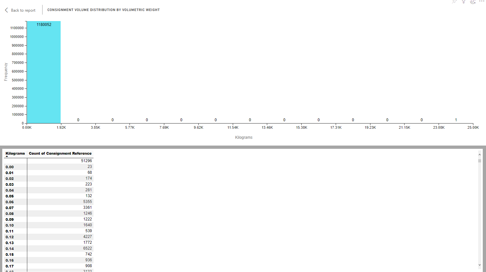

Traffic Profile
The Traffic Profile report shows how many consignments that your organisation has manifested in a given timeframe, and the weights of the consignments manifested. It comprises a table listing consignment and packages data, and two bar charts: Consignment Volume Distribution by Absolute Weight and Consignment Volume Distribution by Volumetric Weight.

More Information: In the context of PRO, the term "consignment" refers to a collection of one or more packages that are shipped from the same origin address, to the same destination address, on behalf of the same Sorted customer, using the same carrier service, on the same day.
A package is an item or a collection of items, wrapped or contained together for shipment. Each package can contain one or more items.
As an example, suppose that a clothing retailer has received a customer order for a necklace, a bracelet, a coat, and a hat. As the necklace and bracelet are both physically small, the retailer elects to ship them in the same package. As such, this sales order would break down to:
- Four items - The necklace, the bracelet, the coat, and the hat.
- Three packages - One containing the necklace and bracelet, one containing the coat, and one containing the hat.
- A single consignment corresponding to everything on the order.
Report Filters
The Traffic Profile report offers the following report-wide filters:
- Date Manifested - enables you to select consignments that were manifested within a given date range.
- Company - where applicable, enables you to select consignments that were manifested by a particular company within your group. You can select multiple companies if required.
- Shipping Location - where applicable, enables you to select consignments that were manifested from a particular shipping location.
- Carrier - enables you to select consignments that were manifested to a particular carrier.
- Carrier Service - enables you to select consignments that were manifested to a particular carrier service.
- Delivery Type - enables you to select consignments that were used a particular delivery type (i.e. Delivery or Click and Collect).
Consignments Table

The consignment data table visual lists the following information for each of your companies (with any report filters taken into account):
- Consignments - Number of consignments manifested.
- Packages - Number of packages manifested.
- Average Packages Per Consignment
- Average Weight, KG - The average weight, in kilograms, of the consignments shipped.
- Average Weight, Volumetric - The average volumetric weight of the consignments shipped.
Visual Filters
The consignment data table enables you to filter the companies displayed. For example, if you were to set an Average Packages Per Consignment filter of less than 1.5 packages, then any companies shipping an average of 1.51 or more packages per consignment would be excluded. The following filters are available:
- Average Packages Per Consignment (Numerical) - enables you to filter by the average number of packages shipped in each consignment.
- Consignments (Numerical)
- Packages (Numerical)
- Average Weight, KG (Numerical)
- Average Weight, Volumetric (Numerical)
- Company (Basic and Advanced)
More Options
The following options are available from the More Options menu:
- Open Comments
- Export Data
- Show Data
- Spotlight
- Sort Descending
- Sort Ascending
- Sort by Company / Consignments / Packages / Average Packages per Consignment / Avg Weight, Kg / Avg Weight, Volumetric
Consignment Volume Distribution by Absolute Weight
The Consignment Volume Distribution by Absolute Weight chart displays the weight distribution of your manifested consignments.

In the example above, the company in question has shipped 53,324 consignments that were between 0 and 4.75kg in weight, 10,306 parcels that were between 4.76 and 9.52 kg in weight, and so on.
Visual Filters
The Consignment Volume Distribution by Absolute Weight chart's Kilograms filter is a (Numerical) filter that enables you to limit the consignment weights displayed. For example, if you were to set the filter to is greater than or equal 10, then the chart would only display data for those consignments with an absolute weight of 10kg or above.
More Options
The following options are available from the More Options menu:
Viewing Data

The Consignment Volume Distribution by Absolute Weight chart's Show Data option displays a table of absolute weights in kilograms (rounded to the nearest 10 grams), and a count of how many consignments met each weight. For example, the sample image shows that the customer shipped 266 consignments with a total weight of 0.14 kg (i.e. 140 grams), and 39 consignments with a total weight of 0.25 kg (250 grams).
Consignment Volume Distribution by Volumetric Weight
The Consignment Volume Distribution by Volumetric Weight chart displays the volumetric weight distribution of your manifested consignments.

Note:
Volumetric weight is a method of estimating a parcel's weight using its dimensions. It is usually calculated as the parcel's length x weight x height (all in cm) / 5000, although exact calculations can vary between carriers.
For example, a 10cm cube would have a volumetric weight of 10 x 10 x 10 / 5000 = 0.2 kg
In the example above, the company in question has shipped 65,091 consignments that were between 0 and 9.26kg in volumetric weight, 7,550 parcels that were between 9.72 and 18.53 kg in volumetric weight, and so on.
Visual Filters
The Consignment Volume Distribution by Volumetric Weight chart's Kilograms filter is a (Numerical) filter that enables you to limit the consignment weights displayed. For example, if you were to set the filter to is greater than or equal 10, then the chart would only display data for those consignments with a volumetric weight of 10kg or above.
More Options
The following options are available from the More Options menu:
Viewing Data
The Consignment Volume Distribution by Volumetric Weight chart's Show Data option displays a table of volumetric weights in kilograms (rounded to the nearest 10 grams), and a count of how many consignments met each weight. For example, the sample image shows that the customer shipped 266 consignments with a total weight of 0.14 kg (i.e. 140 grams), and 39 consignments with a total weight of 0.25 kg (250 grams).